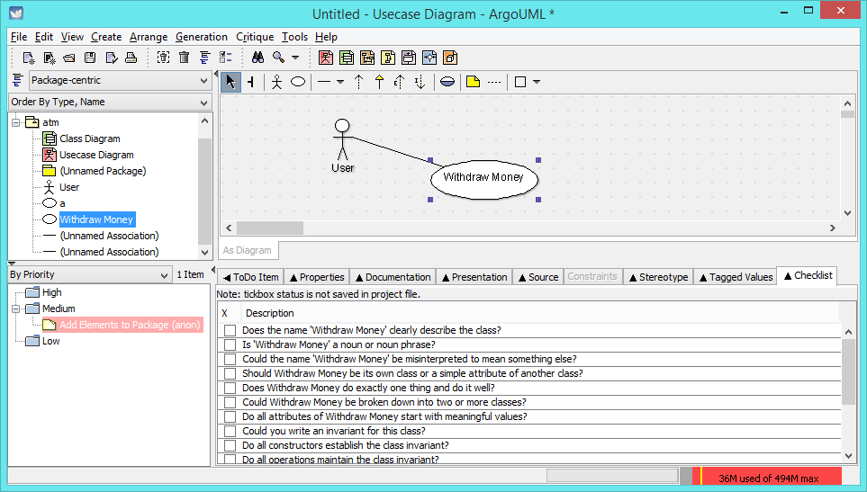
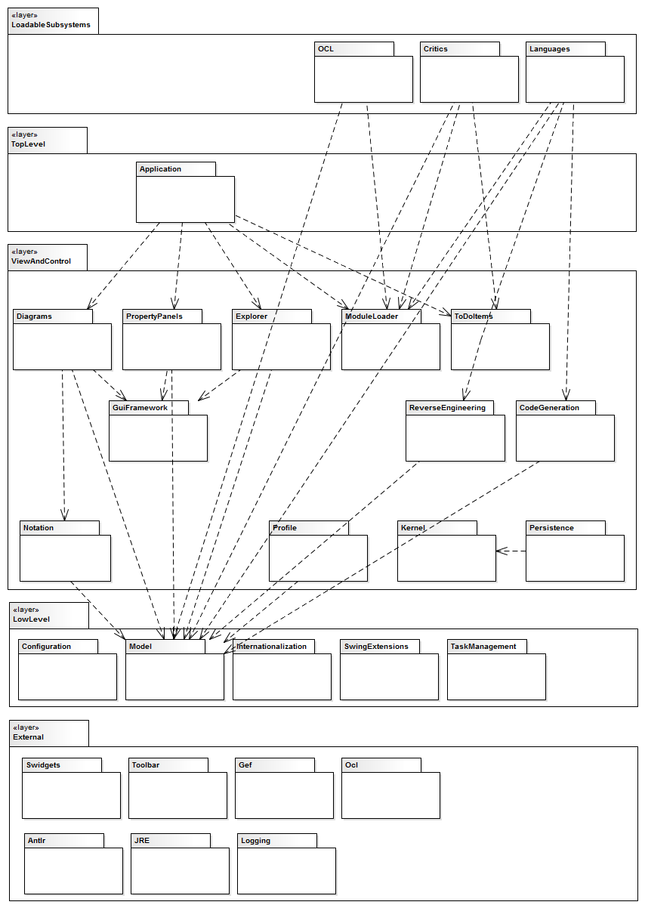
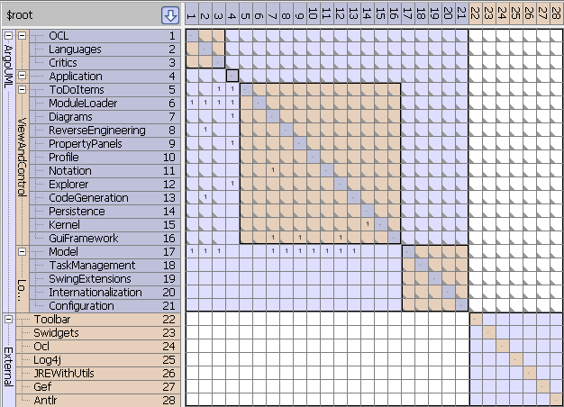
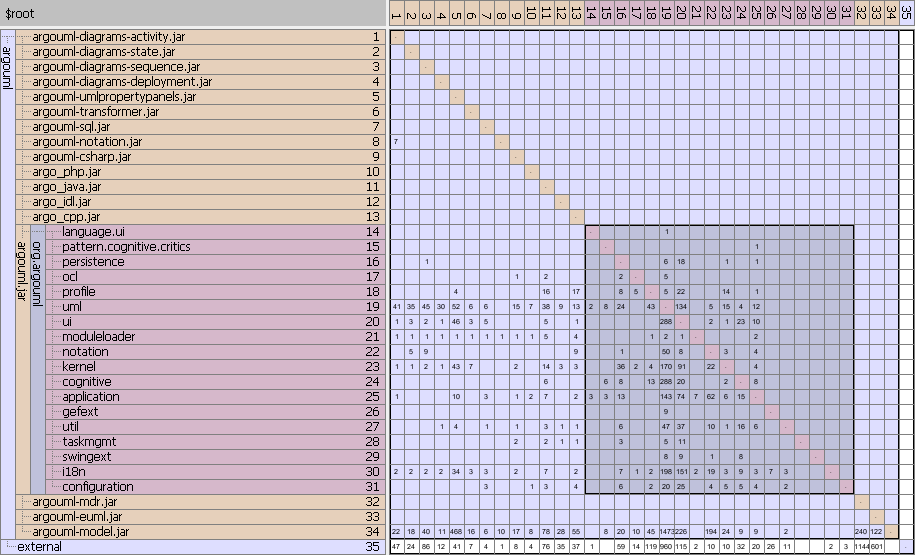
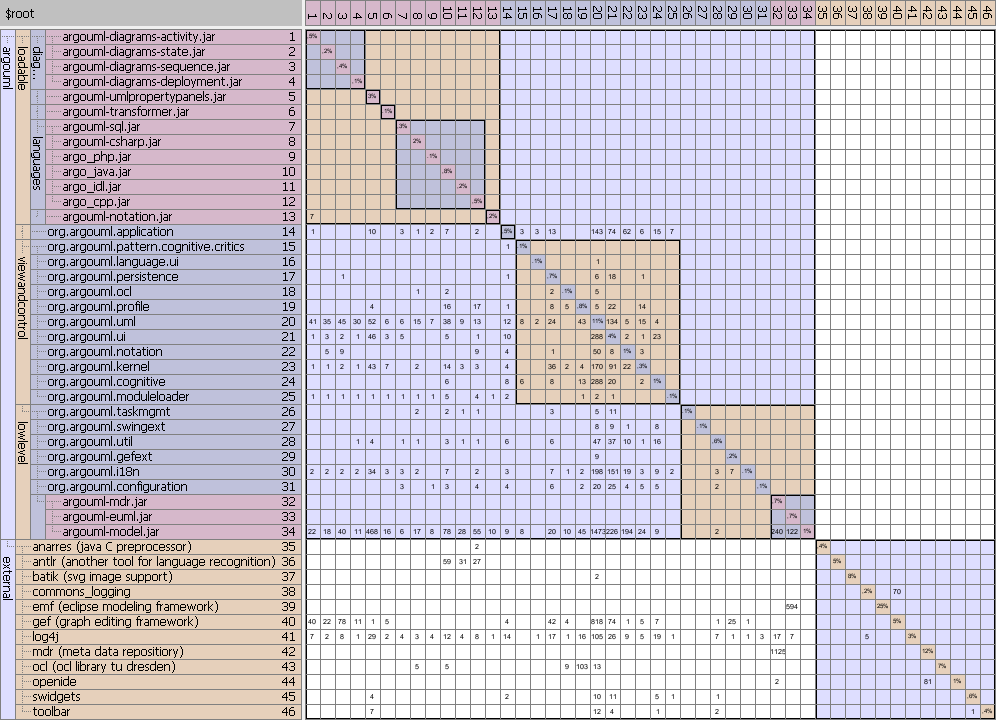
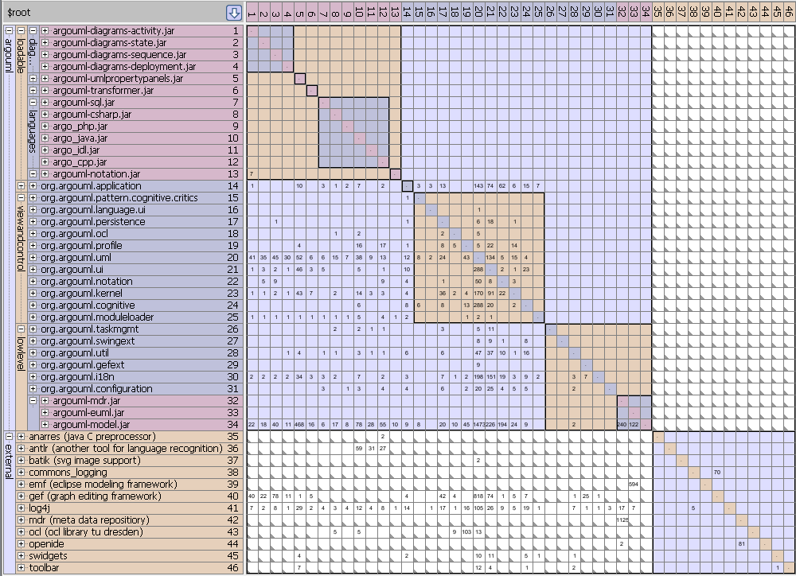
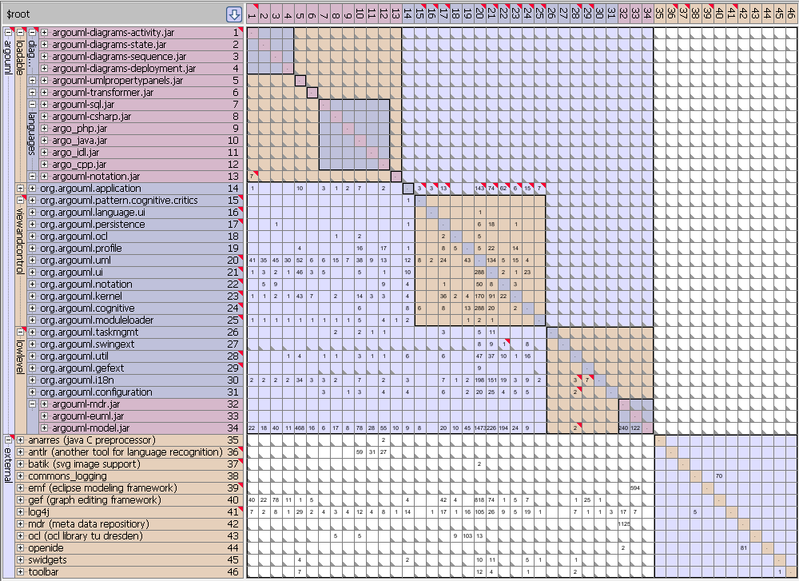
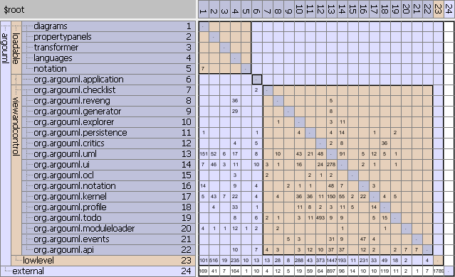
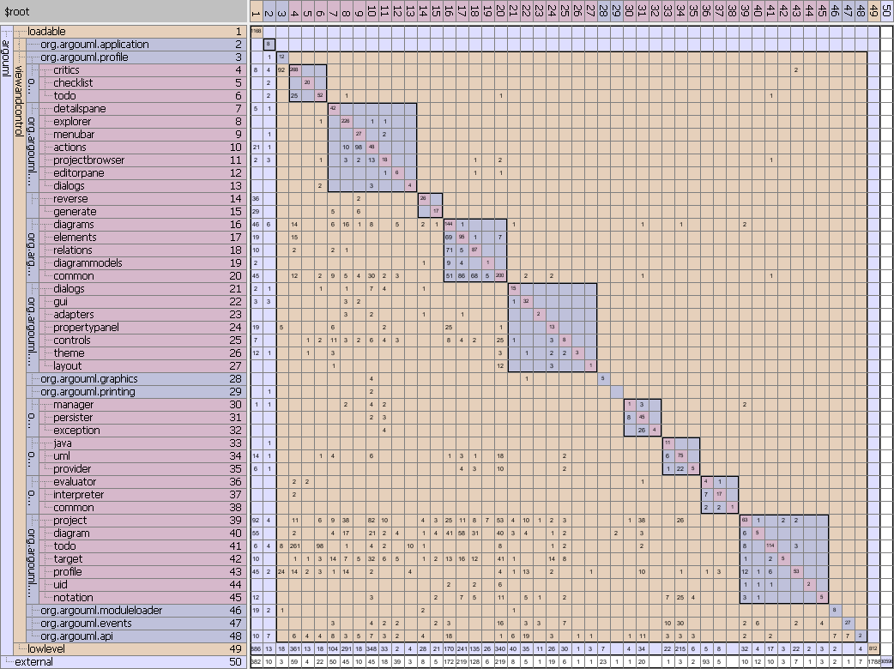

Een analyse van ArgoUML met Design Structure Matrix
Inleiding
Doel
In het Java Magazine artikel 'Een Design Structure Matrix geeft grip op softwareafhankelijkheden' zijn de basis concepten van DSM's uitgelegd
en is duidelijk gemaakt welke voordelen het gebruik ervan kan opleveren.
Deze beschrijving vult dit artikel aan en laat zien hoe de daarin beschreven concepten in praktijk gebruikt kunnen worden ten behoeve van de beoordeling, bewaking
en verbetering van een software architectuur.
In gevallen waar een formele software architectuur ontbreekt of deze geheel niet voldoet kan de aanpak ook gebruikt worden om de software architectuur te ontdekken op basis van
de relaties tussen classes zoals die aanwezig zijn in de code.
In deze beschrijving gebruiken we een DSM representatie van de code structuur om:
- Een architectuur te beoordelen door te kijken in hoeverre de implementatie conform de gedocumenteerde architectuur is.
- De architectuur te borgen door de definitie van afhankelijkheidsregels.
Door te bewaken dat code conform deze regels geïmplementeerd wordt kan degradatie van de architectuur voorkomen worden.
- De architectuur te verbeteren door aanpassingen van de code structuur te simuleren in de DSM.
Deze werkwijze maakt het mogelijk snel een aantal verschillende scenario's te evalueren alvorens tot daadwerkelijke code aanpassingen over te gaan.
- De architectuur te ontdekken van een deel van de applicatie dat veel cyclische relaties heeft.
Notatie
In dit artikel wordt vaak verwezen naar rijen of cellen van een DSM. De notatie hiervoor is als volgt:
- [1] Rij 1
- [1-2] Rij 1 t/m 2
- [1,2] Cel in rij 1 en kolom 2
- [1-2,2] Cellen in rij 1 t/m 2 en kolom 2
- [1-2,2-3] Cellen in rij 1 t/m 2 en kolom 2 t/m 3
Case
Als case is het open source modeling tool ArgoUML genomen, omdat:
- Deze code publiekelijk beschikbaar is.
- Deze code ruim 1900 classes bevat, waardoor het een realistisch voorbeeld is dat vergelijkbaar is met de dagelijkse praktijk.
- Er voldoende ontwerp informatie beschikbaar is, zodat gecontroleerd kan worden in hoeverre de implementatie conform het beschreven ontwerp is.
- Het een bekend en goed gedocumenteerd probleem domein (UML 1.4) betreft, zodat het voorbeeld voor elke ontwikkelaar te begrijpen is.
ArgoUML is een open source UML 1.4 modeling tool geschreven in de Java programmeer taal.
ArgoUML kan code voor verschillende programmeer talen genereren. Tevens is het mogelijk om met deze tool code te reverse engineeren.
Uniek is dat het tool de ontwerper ondersteunt door middel van checklisten en automatisch gegenereerde design kritieken
op basis van een aantal vooraf gedefinieerde design regels.
Voor een overzicht van de features zie ArgoUML Tour.

Figuur 1: ArgoUML user interface
De case is uitgewerkt zonder enige voorkennis van ArgoUML en er is gebruik gemaakt van het commercieel beschikbare DSM tool Lattix.
Gedocumenteerd Ontwerp
UML Beschrijving
Het ontwerp van ArgoUML is beschreven in het ArgoUML Cookbook. Dit Cookbook bevat een
tekstuele beschrijving van het ontwerp aangevuld met een beperkt aantal UML diagrammen. Dat zelfs in het ontwerp van een UML tool de UML
notatie zelf nauwelijks gebruikt wordt is veelzeggend.
Als we de informatie samenvatten komen we tot onderstaand architectuur diagram. Van elke laag en subsysteem is een korte beschrijving beschikbaar
via tooltips in het diagram. Ook kan via het diagram genavigeerd worden naar de Cookbook beschrijving van de betreffende laag of subsysteem.

Figuur 2: ArgoUML ontwerp diagram
DSM Beschrijving
Op basis van bovenstaande ontwerp informatie kan een DSM gemaakt worden van de verwachte
structuur van ArgoUML met daarin weergegeven de niet toegestane relaties.

Figuur 3: ArgoUML ontwerp DSM (grijze driehoekjes in een cel geven niet toegestane relaties weer)
Relaties zijn niet toegestaan tenzij:
- De relatie expliciet gedocumenteerd is in een UML diagram van het Cookbook (cellen met dependency strength 1).
- Het een ingaande relatie is voor low level en externe subsystemen. Deze subsystemen mogen door iedereen gebruikt worden.
- Het een uitgaande relatie is van het 'application' subsysteem, die alle subsystemen kent i.v.m. initialisatie.
Om de architectuur te kunnen beoordelen worden de volgende stappen uitgevoerd:
- Creëer een DSM model door het importeren van de ArgoUML Java binaries in een DSM tool.
- Structureer het DSM model zover mogelijk conform de in het Cookbook gedefinieerde lagen en subsystemen.
- Vergelijk de gedocumenteerde software architectuur met de resulterende DSM.
Stap 1: Creëer het DSM model
We importeren alle binaries in de ArgoUML installatie directory. Na de import actie heeft elke binary (.jar file) in de DSM onder zich een hierarchie van een of meerdere namespaces.
Elke namespace kan classes bevatten. We scheiden de ArgoUML en externe binaries.

Figuur 4: Initiele DSM : Weergave ArgoUML applicatie binaries en hun dependencies
Stap 2: Structureer het DSM model volgens het gedocumenteerd ontwerp
Het bovenstaande DSM model is georganiseerd op basis van de structuur van het deployment
model. We willen echter een DSM georganiseerd op basis van een logisch model te
vergelijken met de elementen in de ontwerp beschrijving. De resulterende DSM van figuur 5 bereiken als volgt:
- We maken onder '$root/argouml' de vier beschreven layers aan:
'loadable' [1-13],
'top level' [14],
'view and control' [15-25] en
'low level' [26-34] conform het ontwerp.
- Loadable subsystemen zijn optioneel en kunnen dus geen ingaande relaties hebben. In de
initiële DSM van figuur 4 zijn alle binaries boven 'argouml.jar' dus waarschijnlijk loadable subsystemen.
We verplaatsen ze naar de 'loadable' layer. Om de DSM compact te houden clusteren we de binaries
in deze layer verder in de sub-layers
'diagrams' [1-4],
'propertypanels' [5],
'transformer' [6],
'languages' [7-12] en
'notation' [13].
- De binary 'argouml.jar' bevat een aantal namespaces. We verplaatsen ze naar de
layer zoals beschreven in het ontwerp:
- Het subsysteem 'application' [14] hoort thuis in de 'top level' layer.
- De subsystemen
'taskmgnt' [26],
'swingext' [27],
'configuration' [31] en
'i18n' [30] horen thuis in de 'low level' layer.
- Op basis van de naamgeving voegen we ook de niet gedocumenteerde subsystemen
'util' [28] en
'gefext' [29] aan de 'low level' layer toe.
Deze keuze wordt bevestigd het feit dat deze subsystemen geen relaties met bovenliggende lagen hebben.
- Van de overige subsystemen nemen we aan dat ze in de 'view and control' layer thuis horen.
- De namespaces binnen de binaries 'argouml-mdr.jar', 'argouml-euml.jar' en
'argouml-model.jar' beginnen allemaal met 'org.argouml.model'. Volgens het ontwerp is
dit een deel van de 'low level' layer. We maken een subsysteem 'model' [32-34]
in deze layer aan en verplaatsen de binaries naar deze layer.
- Om de DSM compact te houden clusteren we de externe binaries [35-46].
Het resultaat is de onderstaande DSM:

Figuur 5: Aangepaste DSM gestructureerd op basis van het gedocumenteerd ontwerp
Stap 3 : Beoordeel architectuur
Als we bovenstaande DSM vergelijken met de ontwerp documentatie valt het volgende op:
- De 'loadable' layer [1-13]:
- Bevat meer subsystemen dan gedocumenteerd.
De gedocumenteerde subsystemen 'critics' en 'ocl' ontbreken.
Er zit overigens wel een 'critics' package in het loadable subsystem voor Java.
- De subsystemen zijn niet onafhankelijk, wat vereist is als ze
individueel te laden zijn. Er bestaat namelijk een relatie van 'diagrams' naar
'notation' [13,1].
- De 'top level' layer [14]:
- Heeft ingaande relaties [14,15-25], wat uiteraard niet is toegestaan.
- De 'view and control' layer [15-25]:
- Bevat andere subsystemen dan gedocumenteerd.
- Heeft veel cyclische relaties tussen de subsystemen,
waardoor deze laag een monolitisch karakter heeft.
Dit is ongewenst en was op basis van de ontwerp documentatie niet te verwachten.
- De 'low level' layer [26-34]:
- Bevat meer subsystemen dan gedocumenteerd.
- De 'external' layer [35-46] meer libraries bevat dan gedocumenteerd namelijk:
- Annarascpp - A Java C Preprocessor (org.anarres.cpp) [35]
- Batik - SVG image support (org.apache.batik) [37]
- Commonslogging (org.apache.commons.logging) [38]
- Eclipse modeling framework (org.eclipse.emf en org.eclipse.uml) [39]
- Meta Data Repository (mdr) [42]
- Openide (openide) [44]
Nadat we de code architectuur in kaart gebracht hebben leggen we een aantal architectuur regels vast ter beperking van mogelijke afhankelijkheden in de software.
Door deze regels nu al vast te leggen en te gaan bewaken kan verdere degradatie van de architectuur voorkomen worden.
Als input gebruiken we primair de ontwerp beschrijving in het Cookbook. We vullen dit aan met een analyse van de in de code gevonden afhankelijkheden.
Stap 1: Definieer regels voor gebruik externe subsystemen
Ten aanzien van het gebruik van externe subsystemen observeren we dat:
- Voor code engineering geldt:
- [35,12] De C preprocessor 'anarres' alleen door het c++ language subsysteem
gebruikt mag worden ten behoeve van reverse engineering.
- [36,7-12] Het language recognition tool 'antlr' alleen gebruikt mag worden door
de language subsystemen ten behoeve van reverse engineering.
- Voor de user interface geldt:
- [37,20] Batik SVG image support alleen gebruikt wordt door 'org.argouml.uml'
ten behoeve van exporteren van diagrammen naar SVG formaat.
- [40] Het graph editing framework wordt gebruikt ten behoeve van visualisatie en niet door de non-ui
subsystemen 'languages' [40,7-12] en 'notation' [40,13],
'moduleloader' [40,25], 'taskmgmt' [40,26],
'configuration' [40,31] en 'model' [40,32-34].
- [45-46] De libraries 'swidgets' en 'toolbar' worden gebruikt door de ui subsystemen
'propertypanels' [45-46,5], 'org.argouml.uml [45-46,20],
'org.argouml.ui' [45-46,21], 'org.argouml.cognitive' [45-46,24]
en 'org.argouml.util' [45-46,28].
- Voor logging geldt:
- [41,1-34] Alle subsystemen moeten voor logging gebruik maken van 'log4j'.
- [38,1-34] Om die reden is rechtstreeks gebruik van 'commons_logging' niet toegestaan.
- Voor 'ocl' library van tu dresden geldt:
- [43,7-12] Deze library wordt gebruikt door het loadable subsystem 'languages'
waarschijnlijk ten behoeve van code generatie van asserts op basis van OCL constraints.
- [43,18-20] Deze library wordt daarnaast gebruikt door de volgende UML gerelateerde subsystemen
'org.argouml.ocl', 'orgargouml.profile' en 'org'argouml.uml'.
- Een aantal externe subsystemen maar door één ander subsysteem gebruikt wordt:
- [39,33] Het eclipse modeling framework wordt alleen gebruikt door 'argouml-euml.jar'.
- [42,32] Het meta data repository framework wordt alleen gebruikt door 'argouml-mdr.jar'.
- [44,32] Openide wordt alleen gebruikt door 'argouml-mdr.jar'.
- [1-34,35-46] De externe libaries uiteraard niets van ArgoUML mogen gebruiken.
We leggen deze observaties door middel van afhankelijkheidsregels vast in de DSM. De DSM ziet er dan als volgt uit:

Figuur 6: Regels gebruik externe subsystemen (grijze driehoekjes in een cel geven niet toegestane relaties weer)
Stap 2: Definieer regels voor interne subsystemen
Ten aanzien van het gebruik van interne subsystemen observeren we dat:
- Voor de layering geldt dat een subsysteem geen subsystemen in een bovenliggende layer mag gebruiken.
- [1-13,14-34] De 'loadable' layer mag door niemand gebruikt worden.
- [14,15-34] De 'top level' layer mag niet door de 'view and control' en de 'low level' layer gebruikt worden.
We zien een uitzondering in de vorm van relaties naar de 'top level' layer toe [14,15-25].
- [15-25,26-34]
De 'view and control' layer mag niet door de 'low level' layer gebruikt worden.
- Voor 'loadable' subsystemen geldt:
- [1-13] Ze geen onderlinge afhankelijkheden mogen hebben, omdat
ze anders niet individueel laadbaar zijn. We zien een uitzondering in de vorm van de relatie
van 'diagrams' naar 'notation' [13,1].
- [1-13] Ze de interface gedefinieerd in 'module loader' dienen te implementeren.
Bij de loadable module voor 'idl' is dit niet het geval. Er is namelijk geen relatie vanuit deze module naar de module loader [25,11].
- Voor 'view and control' subsystemen geldt:
- [15-25] Ze niet zo onafhankelijk zijn als we op basis van het ontwerp verwacht hadden.
Deze laag zou grondig gerefactored moeten worden. Op dit moment is moeilijk te bepalen welke relaties toegestaan zijn en welke niet.
- Voor 'low level' subsystemen geldt:
- [26-34] De subsystemen over het algemeen onafhankelijk zijn zoals te verwachten. Uitzonderingen
zijn 'org.argouml.i18n' [30] dat ingaande relaties en 'org.argouml.util' [28] dat uitgaande relaties heeft.
We leggen deze observaties weer door middel van afhankelijkheidsregels vast in de DSM. De DSM ziet er dan als volgt uit:

Figuur 7: Regels gebruik interne subsystemen (grijze driehoekjes in een cel geven niet toegestane relaties weer, rood is een overtreding van een regel)
De analyse met behulp van DSM's heeft aan het licht gebracht, dat er ongewenste afhankelijkheden zijn.
Om de software beter onderhoudbaar en testbaar te maken gaan we de software stapsgewijs verbeteren.
Het doel van eerste verbetering is om de cyclische afhankelijkheden van de 'top level' layer te elimineren. We doen dit in een aantal stappen.
Stap 1: Verplaats 'api' en 'events' packages
In de eerste stap elimineren we de cyclische afhankelijkheden veroorzaakt door de 'api' en '.events' packages.
Figuur 8: Verplaats 'api' en 'events' packages
Stap 2: Verplaats 'ApplicationVersion' class
In de tweede stap elimineren we de cyclische afhankelijkheden veroorzaakt door de 'ApplicationVersion' class.
Figuur 9: Verplaats ApplicationVersion class
Stap 3: Verplaats ResourceLoader classes
In de derde stap elimineren we de cyclische afhankelijkheden veroorzaakt door de resourceloader classes.
Figuur 10: Verplaats ResourceLoader classes
Na uitvoeren van deze derde stap zijn alle ingaande relaties verwijderd. De architectuur
bevat nu vier onafhankelijke lagen zoals gedocumenteerd.
Verbeter architectuur - Low level layer
Op zich zijn er in de 'low level' layer geen grote dependency problemen. Subsystemen in de
'low level' layer zijn zoals verwacht over het algemeen onafhankelijk. Uitzonderingen zijn
'org.argouml.i18n' dat ingaande relaties en 'org.argouml.util' dat uitgaande relaties heeft.
Stap 1: Splits argouml.util op
Als we kijken naar de package 'utils' zien we dat die een weinig specifieke naam heeft. Een
dergelijk package fungeert in de praktijk vaak als een soort vergaarbak van allerlei classes. Dit
wordt bevestigd in dit geval door het feit dat de package is gegroeid van 11 classes in
versie 0.10.1 naar 34 classes in versie 0.34. Een nadeel is dat het lastig te
definiëren is welke dependencies een dergelijk onsamenhangende package wel of niet mag hebben. We gaan
daarom kijken of we de package kunnen opsplitsen.
Figuur 11: Opsplitsen argouml.util
Verbeter architectuur - View and control layer - Structureer volgens ontwerp
We zien dat de subsystemen in de 'view and control' layer niet overeenkomen met de gedocumenteerde subsystemen.
Een eerste stap is om dit meer in lijn te brengen. We doen dit in een aantal stappen.
Stap 1: Verplaats explorer
De eerste stap om de DSM meer in lijn te brengen met het ontwerp is om de 'explorer' uit 'ui' package te halen.
Figuur 13: Verplaats explorer
Stap 2: Cluster cognitive
De tweede stap om de DSM meer in lijn te brengen met het ontwerp is om de cognitive aspecten the clusteren in een 'cognitive' package.
Figuur 15: Cluster cognitive
Stap 3: Verplaats code engineering
De derde en laatste stap om de DSM meer in lijn te brengen met het ontwerp is om de code generatie en reverse engineering uit de 'uml' package te halen.
Figuur 16: Verplaats code engineering
Tussenresultaat
Nadat we de 'view and control' layer zoveel mogelijk in lijn gebracht hebben met het gedocumenteerde ontwerp, zien we dat de modules goed overeenkomen, maar dat de
dependencies tussen de modules nog steeds problematisch zijn. Het zijn met name de modules 'org.argouml.uml' [13]
en 'org.argouml.ui' [14] die voor problemen zorgen.
Bovendien zijn deze modules ook nog eens onderling sterk gekoppeld.

Figuur 17: ArgoUML werkelijke structuur view and control layer
Omdat de gedocumenteerde architectuur voor de 'view and control' layer niet overeenkomt met de in de code gevonden structuur,
besluiten we voor deze layer een andere aanpak te kiezen.
We laten de bestaande indeling geheel los en onderzoeken met behulp van een DSM in hoeverre op basis van de
class dependencies een andere indeling in subsystemen handiger zou zijn.
Proces
Een stap voor stap beschrijving van een dergelijke aanpak zou erg uitgebreid worden. We beschrijven daarom alleen het gevolgde proces.
- Verwijder de bestaande indeling voor 'view and control' layer. Deze layer bevat circa 1200 classes.
- Partioneer de 'view and control' layer in de DSM. Door een partionering algorithme los te laten op deze layer, ontdekken we de in code aanwezige structuur.
Deze kan significant afwijken van de gedocumenteerde structuur.
In het geval van ArgoUML ontdekken we circa 70 partities in de 'view and control' layer. Als partitie wordt herkend:
- Een verzameling van onafhankelijke classes.
- Een verzameling van cyclisch gekoppelde classes.
- Vervolgens kijken we of we in de gevonden partities een bepaalde abstractie kunnen ontdekken. We kijken daarbij naar:
- Het probleem domein.
- De naamgeving van de classes.
- De onderlinge relaties tussen de classes.
- De oorspronkelijke namespace van de classes.
We geven de partitie een naam op basis van de gevonden abstractie.
- We beperken het aantal partities door de gevonden partities in een hierarchie te ordenen.
Daar waar nodig verplaatsen we classes naar een andere partitie.
Eindresultaat
We zien dat het aantal cyclische relaties op architectuur nivo sterk gereduceerd is. We zien de volgende modules in de 'view and control' layer:
- [3] Profile - UML profielen.
- [4-6] Cognitive - Design kritieken, checklists en todo items.
- [7-13] User Interface - Hoofdelementen in user interface.
- [14-15] Code generation en reverse engineering.
- [16-20] UML - Diagrammen, elementen en relaties.
- [21-27] User interface core - Framework implementatie
- [28] Graphics - Exporteer diagram als afbeelding.
- [29] Printing - Print diagram.
- [30-32] Persistency
- [33-35] OCL - Constraints.
- [36-38] Notation - UML notation.
- [39-45] Kernel - Core functionality.
- [46] Module loader.
- [47] Events.
- [48] API.
De belangrijkste verschillen zijn dat de 'ui' package opgesplitst is in twee packages en er functionaliteit naar de kernel verplaatst is.

Figuur 18: Eind resultaat overview
We zien echter ook dat niet alleen het aantal cyclische relaties op architectuur nivo sterk gereduceerd is,
maar dat dit ook binnen de modules het geval is.
De classes in de 'uml' package hebben we geordend op basis van UML diagram types, UML element types en UML relatie types. We zien dat met de nieuwe indeling er
minder cyclische relaties zijn en het eenvoudiger is om over de correctheid van de relaties te redeneren.
Figuur 19: Eind resultaat uml package
Vervolg
Doorvoeren aanpassingen in de code
Als we na een succesvolle analyse de code conform de DSM willen maken, hoeven we alleen maar:
- Source code files naar andere directories te verplaatsen.
- Namespaces aan te passen.
- Build files aan te passen.
Functionele aanpassingen in de code dus zijn niet nodig, hetgeen inhoud dat deze aanpassingen met weinig risico door te voeren zijn,
terwijl de winst in termen van begrijpbaarheid, onderhoudbaarheid en testbaarheid groot is.
Verdere stappen ter verbetering van de architectuur
Om alle cyclische relaties te elimineren zijn nog verdere stappen nodig.
We moeten ons realiseren dat we het bovenstaand resultaat bereikt hebben door slechts classes te verplaatsen.
Verdere acties zouden kunnen zijn:
- Introduceer interfaces om cyclische relaties te elimineren.
- Splits classes met meerdere verantwoordelijkheden op, zoals we dit met de 'utils' package hebben gedaan.
Over het algemeen verbetert de dependency structuur hierdoor.
Het is belangrijk te beseffen dat we de bovenbeschreven DSM aanpak behalve op architectuur nivo ook op individuele classes kunnen loslaten.
Als we een DSM hebben waarin ook de attributen en methods van de classes weergegeven worden, kunnen we kijken in hoeverre het verplaatsen
van een attribute of method naar een andere class de structuur verbetert.
Ook kunnen we een dergelijke DSM gebruiken om te analyseren hoe we een class met meerdere verantwoordelijkheden het beste op kunnen splitsen.
Conclusie
Met behulp van de DSM aanpak kunnen we de dependency structuur van software inzichtelijk maken, bewaken en indien nodig verbeteren.
Door verbetering van de dependency structuur kunnen we zowel de productiviteit als defect rate aanzienlijk verbeteren. Het feit dat het met deze
aanpak mogelijk is om een software architectuur te definiëren in termen van bestaande code elementen, maakt een weinig riskante en daarmee een aantrekkelijke benadering
voor projecten waarin verbetering van de productiviteit en defect rate vereist is.